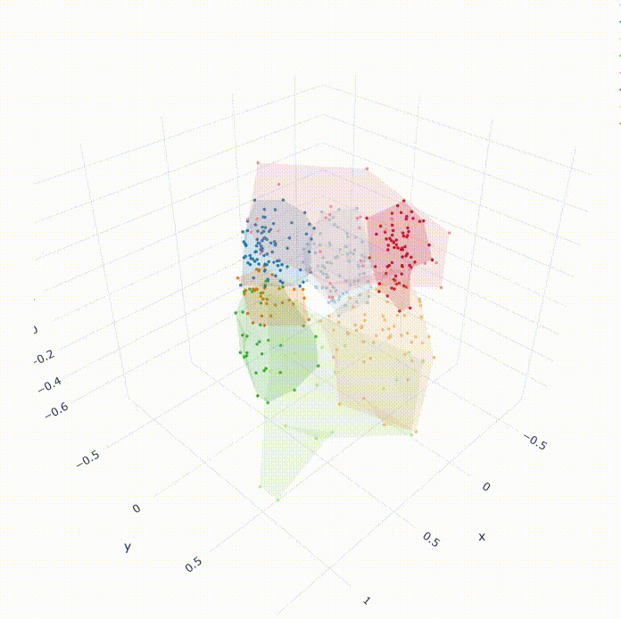

Personal Projects
Basic churn prediction using EDA and Classification algorithms. Also published a webapp.
Classification, EDA, Streamlit, Railway
This project aims to identify which customers are likely to stop doing business with a company in the future, based on their past behavior and other relevant data, to take proactive steps to retain those customers.
SEE THE PROJECT
Creating multiple playlists using K-Means Clustering, Spotipy, and Plotly
K-Means Clustering, Spotipy, Unsupervised ML,EDA, Recommendation system
This project uses Spotipy, Spotify’s API, to access Spotify’s music library through different years and creates multiple playlists grouping similar songs utilizing k-means clustering.
SEE THE PROJECT
Exploratory Data Analysis & Unsupervised Machine Learning
Natural Language Processing and Classification
Classifying racist and homophobic tweets
NLP, Sentiment analysis, classification, hate speech recognition
This project classifies tweets to identify hate speech and categorize tweets that contain hateful or offensive language or themes specifically towards a race or being homophobic.
SEE THE PROJECT
Profesional Development


Work Experience
Data Science consultant
Chartered Professional Accountants of British Columbia
Jan 2022 - May 2022
The Chartered Professional Accountants of British Columbia (CPABC) is the regulatory body for Chartered Professional Accountants in British Columbia, Canada. As a professional organization, CPABC is responsible for setting and enforcing high standards of professional conduct and competency among its members. It also provides ongoing education and support to help its members maintain their professional skills and knowledge. In addition to serving its members, CPABC also works to protect the public interest by ensuring that Chartered Professional Accountants in British Columbia adhere to the highest ethical and professional standards.
Reasearch Assistant
Jain University
September 2022 - December 2022
Jain University in Bangalore, India is a premier institution of higher education that is known for its excellent academic programs and its commitment to providing students with a well-rounded education. The university offers a wide range of undergraduate and graduate programs in disciplines such as engineering, business, law, and the humanities. The university also has state-of-the-art facilities and resources, including modern laboratories and libraries, to support student learning and research. The Data Science department at Jain University is highly respected for its excellent academic programs and its commitment to providing students with a thorough understanding of the field. The faculty in the department is made up of experts in the field who are dedicated to providing students with the latest knowledge and skills in data science.
Education
Simon Fraser University
BSc Data Science
2018-2022
During my time at SFU, I was fortunate enough to be exposed to a wide range of coursework and real-world experience. I learned how to use various data analysis tools and programming languages, including Python, R, and SQL, to extract insights from large datasets and build predictive models. I also had the opportunity to work on several group projects with diverse teams, where I honed my skills in data visualization and communication of findings to diverse audiences. One highlight of my time at university was completing a capstone project, where I worked with Chartered Professional Accountants of British Columbia to identify gaps in their membership program through data-driven decision-making. Overall, I have learned so much about the technical and non-technial side of things which will help me in my professional journey.
Contact
E-mail: mihir.ojhaa@gmail.com
LinkedIn: Mihir Ojha
Feel free to reach out to me for any queries. Always happy to connect and collaborate with wonderful poeple!